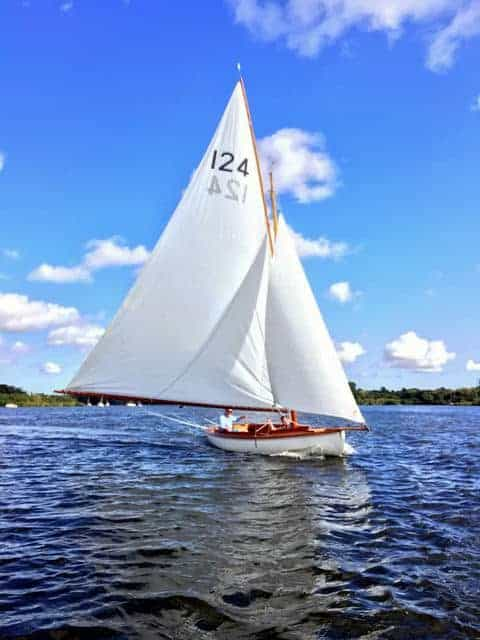

The current O&CSS programme encompasses the events set out below. Where further details are relevant they will have been circulated by email.
Sunday 4 June: Itchenor Swallow Team Racing
If you are keen to participate in this event, please get in touch with Greg Sale.
Thursday 23rd June: Drinks Party 6:30pm- Fastnet Room, RORC, London
Sunday 25 September: Lymington Scow Inter-Club Challenge (Lymington)
Contact Jeremy Vines if you are interested in this fixture - it is a series of club fleet races rather than a team racing event.
2024: 107th Varsity Match, Lymington
Detailed arrangements for the Varsity Match Dinner will be announced in due course.
Mid-September 2024: NBYC Match (Wroxham)
Date TBC. Please contact Greg Sale if you would like to take part in this excellent fixture.
5 October 2024: Generations Event (Farmoor)
See the Team Racing page for details. Note: Hugh Tomkins will be the new Generations organiser from 2024 - we thank Ben for all his help over recent years!
5 October 2024: Following Generations Event: AGM (Oxford)
TBC - 2025: Itchenor Match (Swallows)

George Harston and Ed Clay relax in the sunshine during the NBYC match on Wroxham Broad